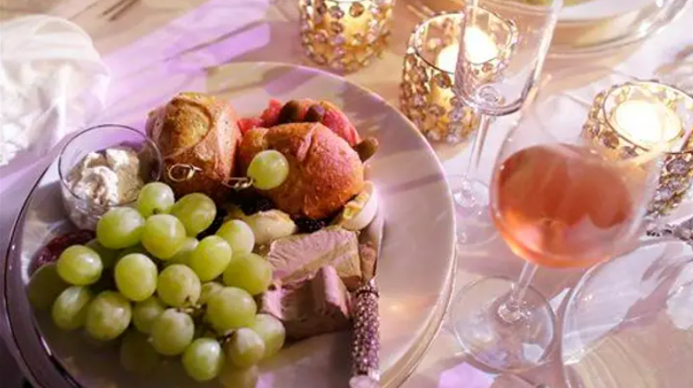
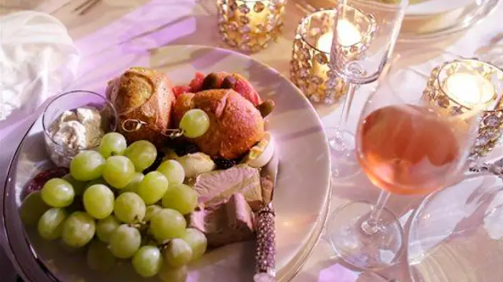

Пользователи социальных сетей на Reddit не были столь терпеливы к молодой женщине, увидев сообщение о том, что она закатила истерику и вылетела с помолвки, потому что хозяева не приспособились к ее веганской диете.
Пользователи Reddit раскритиковали женщину, обвинив ее в том, что она решила «вооружить» свое веганство, будучи «невыносимо грубой, "и необходимость быть "в центре внимания".
Пост на Reddit, которым поделился человек, устроивший помолвочный ужин от имени его и его невесты, недавно стал вирусным из-за резкой реакции на его недовольного гостя.
В посте под названием «Я мудак?» пользователь объяснил, как он пригласил около 30 гостей, в основном членов семьи и близких друзей, в итальянский ресторан, чтобы отпраздновать свою помолвку. В список приглашенных вошли его брат и подруга брата, самопровозглашенная веганка, которую пригласили на вечеринку всего за неделю до ее проведения.
На плакате говорилось, что он и его невеста выбрали итальянский ресторан и варианты ужина до того, как его брат спросил, может ли он привести свою девушку. Поскольку хозяин уже выбрал мясной и рыбный вариант до приглашения вегана, он, по-видимому, не нашел подходящий для нее вариант питания.
Пользователь написал,
«Мой младший брат (20M) связался со мной примерно за неделю до ужина и [спросил], может ли он принести плюс один, свою новую девушку. Он выбрал мясной вариант. Теперь мой брат много встречается и всегда приносит вокруг новые девушки, так что я даже не знала, что он был в отношениях».
— добавил любезный хозяин.
«Я сказал ему, что уверен и что у меня будет дополнительное место для нее».
Он утверждал, что когда наступил вечер ужина, девушка его брата громко потребовала сказать, где есть веганский вариант. В сообщении говорилось: «Когда пришло время есть, она отвела одного из официантов в сторону и ГРОМКО спросила его: «Есть ли какие-нибудь веганские блюда?»
Официант упомянул, что основными блюдами были только мясные или рыбные варианты, но сказал ей, что может предложить ей «салат и немного жареного картофеля и других овощей в качестве замены, если хотите», хотя именно тогда хозяин сказал, что она «начала болтать». ."
По словам пользователя, веганский гость обвинил ресторан в «дискриминации», а затем повернулся к нему посреди ужина, чтобы отругать его. Она якобы спросила: «Почему вы выбрали ресторан, в котором нет веганских блюд? МНОГИЕ люди в настоящее время являются веганами».
Пользователь утверждал, что его гость сказал, что заставил ее «чувствовать себя отчужденной».
Хотя он объяснил ей, что не знал о ее диетических ограничениях и что ее пригласили через несколько недель после того, как он забронировал место, она назвала его «недалеким» и ушла с его братом на буксире.
Затем ведущий отметил, что его брат и его мама настаивали на том, чтобы он извинился перед ней, чтобы «сохранить мир,
", что побудило его повторить свой первоначальный вопрос: "Аита (Я что, мудак) за то, что заставил ее чувствовать себя отчужденной?"
Хотя большинство ответов на Reddit встали на его сторону и раскритиковали его, казалось бы, неблагодарного гостя за ужином.
В одном популярном ответе говорилось: «NTA (не засранец) Подруга была грубой и высокомерной.
Она пыталась стать центром внимания на твоей помолвке».
Другой пользователь написал: «NTA. Я ненавижу, когда люди превращают свое веганство в оружие. Если это не аллергия, отказ от еды — это личный выбор».